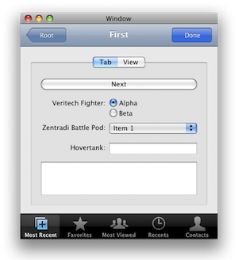

UMEKit
What is it?
UMEKit (pronounced "you, me kit") is an open source (liberal Apache-license) Mac OS X Framework written by Todd Ditchendorf for creating iPhone-like user interfaces in Cocoa desktop applications.
Why is it cool?
The UMEKit API is almost completely identical to Apple's UIKit from iPhone OS, meaning iPhone developers already know the API, and can easily port existing iPhone UI code over to the desktop.
What's done?
UMEKit currently only implements a subset of UIKit from iPhone OS. Basically, the "navigation stack" classes are all that is currently done: UMEViewController, UMENavigationController, UMENavigationBar, UMENavigationItem, UMEBarButtonItem, UMETabBarController, UMETabBar, UMETabBarItem.
Where's the source?
Here: UMEKit on GitHub.
What are the requirements?
- Runs on Mac OS X Leopard or later
What's with the name?
UIKit. U, I. U, Me. Get it?